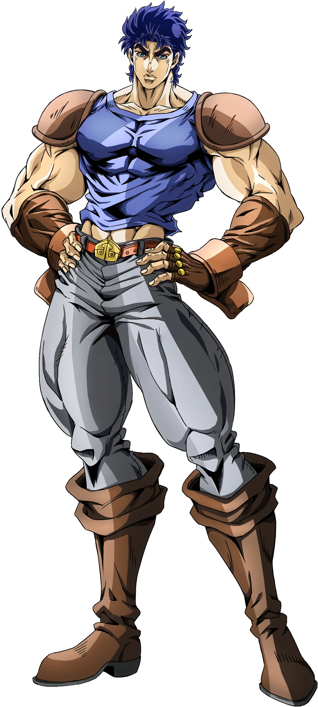

JONATHAN JOESTAR
Jonathan Joestar é o protagonista da Parte 1 de JoJo’s Bizarre Adventure, intitulada Phantom
Blood.
Ele é um jovem nobre britânico do século XIX, criado em uma família rica e educado com
princípios de
honra, justiça e cavalheirismo. Sua história começa quando Dio Brando, um rapaz ambicioso e
cruel, é
adotado por seu pai e passa a viver na mesma casa. Com o tempo, Dio revela suas verdadeiras
intenções: roubar a fortuna dos Joestar e destruir Jonathan. O conflito entre os dois cresce até
que
Dio se transforma em um vampiro graças a uma misteriosa máscara de pedra, tornando-se uma ameaça
sobrenatural.
Para enfrentá-lo, Jonathan aprende a usar o Hamon, uma técnica de energia vital capaz de ferir
seres
das trevas. Ao longo da história, ele luta não só contra Dio, mas também contra zumbis e outros
monstros, sempre guiado por seu forte senso de dever e bondade. Mesmo diante da morte, Jonathan
mantém sua integridade, sacrificando-se para impedir que Dio continue seus planos. Embora sua
jornada termine tragicamente, seu legado dá início a toda a linhagem Joestar que é explorada nas
partes seguintes da série.